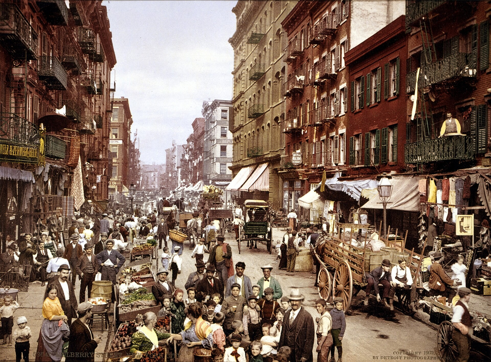

Directions: Study the photograph and the background note, then answer the questions.

Background. Mulberry Street ran through one of the most crowded tenement districts in New York. Its buildings held families in small apartments above shops and stalls, and the street below served as market, road, and open space at the same time. City crews cleaned streets like this one, and the voters who lived on them were the people a political machine worked hardest to keep.
urbanization: the growth of cities as people move to them for work and services
sanitation: public measures that keep water, waste, and streets clean enough to protect health
1. Name two details in the photograph that show how many people this one street had to serve, and state what each detail shows.
2. A market street like this one produced food waste, packaging, and horse manure every day. What would happen to public health on this street if the city's sanitation service stopped working for a month, and why?
3. The ward organization of a political machine knew streets like this one family by family. Give one service the machine might provide on this street, and one way its leaders might profit illegally from the same neighborhood.
4. Which reform would have changed daily life on this street most: a settlement house on the block, or a reorganized street cleaning department? Choose one and defend it with a fact from this lesson.
1. [Blueprint 8] Any two details with the inference stated: tenement facades and fire escapes filling both sides of the street (housing for hundreds within one view); the crowd filling the roadway (the street serves as public space because homes and yards are too small); pushcarts, stalls, and wagons competing for the same space (work, shopping, and transport share one street); laundry and goods hung from the buildings (household life carried on in public).
2. [Blueprint 8] Waste would accumulate in the street and gutters; rotting food and manure would contaminate the area where food is sold and where children play, and waste near water supplies spreads diseases such as typhoid. Proficient answers connect the stoppage to sanitation as a system: the street stays healthy only because collection is regular, which is the point of Waring's 1895 reorganization in New York.
3. [Blueprint 9] Service: a job on a city crew, rent or coal in a hard month, naturalization help, or aid to a family with a member arrested or ill. Illegal profit: graft, such as a kickback on the street cleaning or paving contract for this district, a bribe from a business that wants an inspector to look away, or padded costs on a city contract shared with the contractor. Both halves are required for full credit; the machine's help and its theft were parts of one system.
4. [Blueprint 8 and 9] Accept either choice defended with a lesson fact. Settlement house: Hull House (Chicago, 1889) put classes, childcare, and firsthand study of conditions on the block and pressed the city for services. Street cleaning department: Waring's reorganized crews visibly cleaned New York streets within months in 1895 by using set routes, white uniforms, and separated collection. Weak answers pick one without a fact, or describe a reform the lesson did not present.
Teacher note. This check is formative. Questions 1 and 2 tag to blueprint entry 8 (urban growth, tenements, sanitation, and daily life); question 3 tags to entry 9 (political machines, graft, and early city reform); question 4 tags to both.